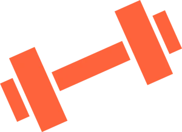

鐵友 IronMate
App Store 上架中重訓加跑步的訓練紀錄 App，深色介面，進健身房打開就能記。
- 每組重量和次數一行記完，跑步紀錄也能匯入
- AI 教練，可選嚴格或溫和的個性
- 進步曲線、個人紀錄與成就徽章
每個品牌各做各的事：一個看懂市場，一個好好過生活，一個玩著學投資。
財經短影音。工作室最早開始、也每天在做的事。觀察美股、台股和產業議題，用看得懂的方式，整理每天市場上真正重要的事。
生活 App 品牌，旗下的 App 都走深色、有質感的設計。名字取自鐵的顏色，也念作「特色」。
鐵色的第一個 App 是鐵友，之後會有更多陪你過生活的工具。

重訓加跑步的訓練紀錄 App，深色介面，進健身房打開就能記。

遊戲品牌。在遊戲裡看懂市場，進場前先練習，被割也只割遊戲幣。
全台玩家在同一個股市裡交易，看誰最會投資，也看誰最會當韭菜。
放置經營遊戲。從第一代 AI 伺服器開始，一路升級供應鏈的每個環節。
轉珠加抽卡。台灣權值股化身角色，用產業技術當技能，組隊闖關。
「思潮」是對市場和時代的觀察：每天讀新聞、看產業，把想法整理清楚。「行者」是想到了就去做：把觀察變成影片，把麻煩變成 App。
不追熱鬧，一步一步往前走，做得穩、用得久，對使用的人真的有幫助。
App 合作、內容合作都可以。說說你遇到的麻煩，我先回一個做法給你。